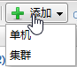
单机：添加单节点数据库实例监控。详细介绍请参见单机监控对话框 。
集群：添加集群环境数据库实例监控。详细介绍请参见集群监控对话框。
 编辑
编辑 删除
删除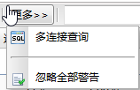
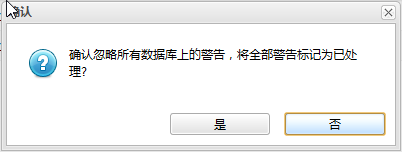
点击是按钮忽略所有数据库上的警告信息。
 。
。双击主页左侧导航树的数据库节点可以打开数据库监控面板。该页面用于管理和查看所有监控的数据库。数据库的监控需要在主机上配置和启动达梦数据库代理，然后在页面上手动添加数据库监控才生效。与主机监控页面一样，该页面每隔一定时间也会自动刷新数据库监控信息。数据库监控可以分为以下几种：
页面如下图所示:
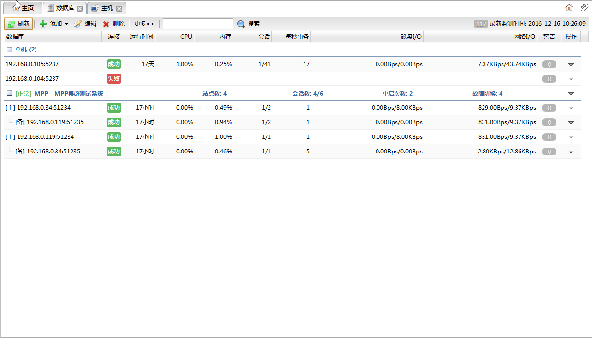
功能按钮列表| 按钮 | 说明 |
|---|---|
| 刷新 | 刷新数据库列表。 |
| 添加 | 添加数据库监控。点击按钮展开菜单如下： 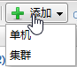 单机：添加单节点数据库实例监控。详细介绍请参见单机监控对话框 。 集群：添加集群环境数据库实例监控。详细介绍请参见集群监控对话框。 |
| 编辑 |
编辑选中的数据库。点击打单机监控对话框。 |
| 删除 |
删除选中的数据库。 |
| 更多>> | 点击按钮可以使用更多功能。弹出菜单如下图所示: 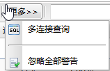 |
| 多连接查询 | 可以同时连接多个数据库实例执行sql语句并查看结果。详细介绍请参见多连接查询面板。 |
| 忽略全部警告 | 忽略所有数据库上的全部警告信息。点击按钮，弹出如下对话框： 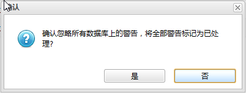 点击是按钮忽略所有数据库上的警告信息。 |
| 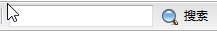 | 对数据库列表进行ip地址端口号的过滤。搜索输入框中输入内容，敲下回车或者点击。 |
| 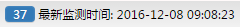 | 显示最近一次获取数据库监控信息的时间，通过点击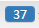按钮可以关闭页面的自动刷新。 |
数据库监控信息列表
表中为当前收集到的各数据库最新的监控信息。
| 字段 | 说明 |
|---|---|
| 数据库 | 数据库ip地址及端口号。 鼠标停留在数据库列，可以显示数据库实例的其他一些信息，如下图所示: 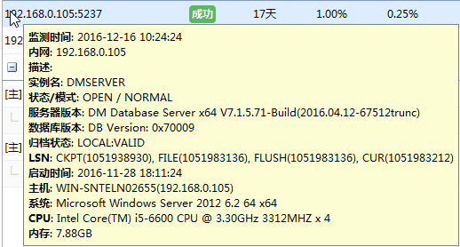 |
| 连接 | 连接是否正常， 表示连接正常，表示连接失败； |
| 运行时间 | 数据库实例运行时间。 |
| CPU | cpu使用率。 |
| 内存 | 内存使用率。 |
| 会话 | 数据库实例的会话数（活动会话数/总会话数）。 |
| 每秒事务 | 数据库实例的每秒事务数。 |
| 磁盘I/O | 数据库实例的磁盘读写速率。 |
| 网络I/O | 数据库实例的网络读写速率。 |
| 警告 | 未处理的告警数量。点击打开告警历史对话框。 |
| 操作 | 点击将弹出操作菜单，如下图所示： 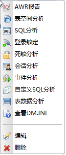 具体详细介绍请参见数据库操作菜单列表 |
数据库操作菜单列表
| 菜单 | 说明 |
|---|---|
| AWR报告 | 数据库监控的AWR报告。点击打开如下对话框： 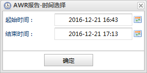 配置要查看AWR报告的时间区间，点击确定按钮打开AWR报告面板。 |
| 表空间分析 | 数据库表空间使用情况。点击打开表空间分析面板。 |
| SQL分析 | 数据库执行的SQL语句的统计分析。点击打开SQL分析面板。 |
| 登录锁定 | 数据库用户被锁定的历史记录。点击打开登录锁定面板。 |
 死锁分析 死锁分析 |
数据库发生死锁的历史信息。点击打开死锁分析面板。 |
| 会话分析 | 数据库会话使用的历史信息。点击打开会话分析面板。 |
| 事件分析 | 数据库事件历史信息。点击打开事件分析面板。 |
| 自定义SQL分析 | 自定义SQL语句监控信息。点击打开自定义SQL分析面板。 |
| 表数据分析 | 数据库表数据监控信息。点击打开表数据分析面板。 |
| 查看DM.INI | 数据库DM.INI配置信息。点击打开查看DM.INI面板。 |
| 编辑 |
可以修改数据库的登录名、密码、描述等信息。点击打开单机监控对话框。 |
| 删除 |
删除数据库监控。 |
表格中的数据库实例按集群分组显示，所有单机实例被分为一组。集群中站点的主备机关系以树形结构的形式展现。如下图所示：
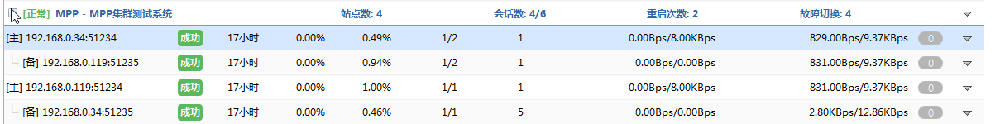
组的标题栏中显示了该集群的状态信息。
| 字段 | 说明 |
|---|---|
| 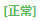 | 集群系统是否运行正常。 |
| 集群类型。 | |
| 集群名称。 | |
| 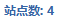 | 站点数量。 |
| 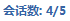 | 集群活动会话数/总会话数。 |
| 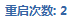 | 集群重启次数。 |
| 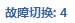 | 集群故障切换次数。 |
| 操作 | 点击将弹出操作菜单，如下图所示： 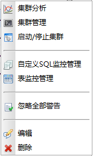 具体详细介绍请参见集群操作菜单列表 |
集群操作菜单列表
| 菜单 | 说明 |
|---|---|
| 集群分析 | 集群监控总体信息。点击打开集群分析面板。 |
| 集群管理 | 集群的管理，类似命令行集群监视器的功能。点击打开集群管理面板。 |
| 启动/停止集群 | 集群的启动和停止。点击打开启动/停止集群对话框。 |
| 自定义SQL监控管理 | 统一给集群中的所有站点添加删除自定义SQL监控。点击打开自定义SQL监控管理对话框。 |
| 表监控管理 | 统一给集群中的所有站点添加删除表监控。点击打开表监控管理对话框。 |
| 忽略全部警告 | 忽略集群中所有站点的警告信息。点击打开忽略全部警告对话框，然后点击对话框中的是按钮。 |
| 编辑 |
集群编辑，可以修改集群中的站点列表、名称、描述等信息。点击打开集群监控对话框。 |
| 删除 |
删除整个集群监控。 |